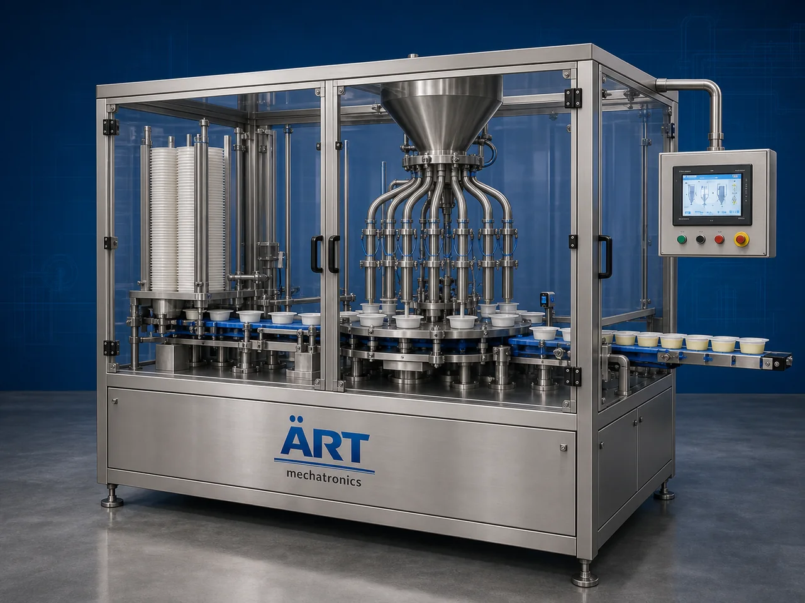

Cup & Tray Filling Machine (Automatic Food Filling System)
A Cup & Tray Filling Machine, also known as a Cup Filling Machine, Tray Filling Machine, Food Container Filling Machine, or Automatic Cup & Tray Packaging System, is an advanced industrial packaging solution designed for automatic cup and tray feeding, product dosing, filling, weighing, sealing…

About the Cup & Tray Filling Machine
Cup and tray filling systems are widely used for: ✔ Yogurt cup filling ✔ Beverage cup packaging ✔ Ready meal tray filling ✔ Sauce and condiment filling ✔ Dessert cup packaging ✔ Dairy product tray filling ✔ Frozen food tray packaging ✔ Hygienic retail food packaging
The machine improves: ✔ Filling accuracy ✔ Product hygiene ✔ Packaging consistency ✔ Shelf life protection ✔ Production efficiency ✔ Product safety ✔ Retail packaging appearance
Industrial cup & tray filling machines use: ✔ Automatic cup and tray feeding systems ✔ Servo synchronized filling systems ✔ PLC and HMI automation controls ✔ Precision volumetric and piston dosing mechanisms ✔ Conveyor integrated handling systems
to automatically fill cups and trays with superior dosing accuracy and high production efficiency.
Cup & tray filling machines are widely used in industries such as:
Dairy industries Food processing industries Beverage industries Ready meal industries Dessert industries Frozen food industries Sauce industries FMCG industries
where hygienic packaging, accurate filling, and premium retail presentation are essential.
The machine is highly suitable for: ✔ Yogurt cup filling ✔ Dessert tray packaging ✔ Sauce cup filling ✔ Beverage cup packaging ✔ Ready meal tray filling ✔ Frozen food packaging
ART Mechatronics offers high-performance cup & tray filling machines, engineered for continuous industrial operation, hygienic food packaging performance, accurate filling quality, and reliable long-term packaging automation.
Working Principle of Cup & Tray Filling Machine
- 1. Empty Cup / Tray Feeding Empty cups or trays are automatically fed into filling section through synchronized indexing systems.
- 2. Product Dosing Process Machine automatically dispenses products into cups or trays using precision filling systems.
Servo synchronization ensures accurate dosing and smooth product handling.
- 3. Filling Operation Machine handles: ✔ Yogurt ✔ Beverages ✔ Sauces ✔ Desserts ✔ Dairy products ✔ Ready meals ✔ Frozen foods
accurately and continuously.
- 4. Filling Stabilization & Hygiene Control Machine performs: Accurate volumetric filling Piston dosing Drip-free filling Hygienic product handling
for clean and contamination-free packaging quality.
- 5. Coding & Inspection Integration Optional systems include: Batch coding Date printing QR code printing Check weighing Vision inspection systems
- 6. Finished Container Discharge Filled cups and trays discharged automatically for: Sealing operations Cartoning Case packing Retail distribution
Types of Cup & Tray Filling Machines
- 1. Yogurt Cup Filling Machine Designed for: ✔ Dairy and fermented product packaging applications
- 2. Ready Meal Tray Filling Machine Suitable for: ✔ Ready-to-eat and frozen food packaging systems
- 3. Sauce & Condiment Filling Machine Uses: ✔ Sauce, ketchup, mayonnaise, and liquid food packaging systems
- 4. Dessert Cup Filling Machine Designed for: ✔ Pudding, jelly, mousse, and dessert packaging systems
- 5. Servo Driven Filling Machine Suitable for: ✔ Precision high-speed filling operations
- 6. Fully Automatic Cup & Tray Filling System Designed for: ✔ Complete industrial food packaging automation lines
Industries Using Cup & Tray Filling Machines
🥛 Dairy Industry Yogurt, flavored milk, cream, and dairy cup filling systems. 🍱 Ready Meal Industry Ready-to-eat meals, frozen foods, and convenience food tray filling systems. 🥤 Beverage Industry Cold beverages, juices, flavored drinks, and liquid cup filling systems. 🍮 Dessert Industry Pudding, jelly, mousse, custard, and dessert cup packaging systems. 🍅 Sauce & Condiment Industry Sauces, dips, mayonnaise, and condiment cup packaging systems. 🛒 FMCG Industry Consumer food products and premium retail packaging systems.
Features & Advantages
✔ High-speed automatic cup and tray filling operation ✔ Accurate volumetric and synchronized dosing systems ✔ Hygienic and contamination-free packaging quality ✔ PLC and servo automation control systems ✔ Improves product freshness and shelf life ✔ Reduces product wastage and labor dependency ✔ Supports multiple cup and tray sizes and product viscosities ✔ Reliable long-term industrial performance ✔ Smooth and continuous packaging operation
Technical Highlights
Machine Type: Automatic cup and tray filling machine Industrial food filling system Container packaging machine Packaging Material: Plastic cups PET trays PP trays Food-grade containers Filling Integration: Servo dosing systems Volumetric filling systems Piston filling systems Features: PLC control system Servo synchronization Touchscreen HMI Batch coding integration Automatic container feeding systems Applications: Yogurt Beverages Desserts Sauces Ready meals Frozen foods Automation: Semi-automatic Fully automatic industrial systems
Turnkey Cup & Tray Filling Solutions
ART Mechatronics offers: Complete filling and packaging systems Automatic cup and tray filling solutions Packaging automation integration systems Conveyor synchronization systems Installation & commissioning After-sales service & AMC
Why Choose Art Mechatronics
Expertise in industrial packaging and automation systems Customized food filling solutions for multiple industries High-performance and hygienic filling technology Advanced PLC and servo automation systems Proven industrial packaging performance across sectors
Applications
Dairy Processing Industries Ready Meal Manufacturing Plants Beverage Packaging Facilities Dessert Manufacturing Units Frozen Food Industries FMCG Packaging Plants
Get pricing & specs for the Cup & Tray Filling Machine
Share the product, target capacity, current process and plant location. These details help our engineers discuss the right machine or line configuration.
One partner, from design to start-up
ART Mechatronics designs, manufactures, installs and commissions your Cup & Tray Filling Machine solution with regional presence in India, UAE and Thailand.